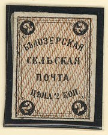
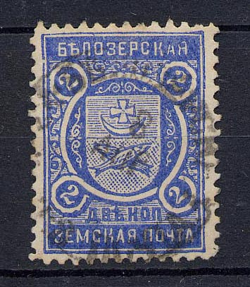
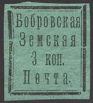

Return To Catalogue - Zemstvos Overview - Russia
Note: on my website many of the
pictures can not be seen! They are of course present in the
catalogue;
contact me if you want to purchase it.

2 k black and brown
3 k black on yellow 3 k black on lilac


Large sized stamps 2 k black (rare) 2 k black on green (rare) 2 k black on blue 2 k black on red (rare) 2 k black on brown 2 k black on yellow (rare) Smaller stamp 2 k black

2 k black
2 k blue (imperforate or perforated)
2 k blue 2 k green

2 k brown 2 k lilac 2 k orange
I've seen the 2 k lilac in tete-beche.


2 k black on red 2 k black 2 k orange 2 k yellow 2 k blue 2 k violet 2 k green 2 k red



Fishes, moon and cross
2 k blue 2 k red 2 k olive 2 k brown 2 k green 2 k orange 2 k yellow 2 k grey 2 k lilac 3 k red 3 k green 3 k brown Surcharged (be careful, forgeries exist!)

3 kop on 2 k red (1908, I've seen an inverted overprint) 3 kop on 2 k grey (1908) 3 kop on 2 k brown (1908) 3 kop on 2 k green (1908) 10 kop on 3 k red (rare, 1915)
(1919 issue?)
3 k black on lilac

3 k black on green

I've been told that this is a forgery. The first "B" in
"BOBROV" is the wrong letter (it's a Russian
"V" instead)....



3 k black on green (oval shaped ornaments) 3 k black on green (rectangular shaped ornaments) 3 k black on lilac (other type) 3 k black on blue (other type)


1 k red 1 k violet (1877) 5 k blue 5 k red (1872) 10 k red 10 k blue

?
1 k violet 1 k brown 1 k red 1 k orange 5 k blue 5 k violet 5 k red 5 k brown 5 k orange 5 k black 10 k brown 10 k blue 10 k red 10 k orange 10 k black
1 k violet 1 k lilac on lilac 5 k blue 5 k orange 10 k blue 10 k orange
1 k violet 5 k blue 5 k orange 5 k red 5 k violet (rare) 10 k blue 10 k orange 10 k lilac
1 k violet 5 k blue 10 k red


1 k violet (due) 1 k red (due, '1893' added in design) 2 k blue (postage paid, '1894' added in design) 2 k brown (due, '1894' added in design) 2 k red (due, '1894' added in design) 4 k blue (postage paid, '1894' added in design) 4 k red (due, '1894' added in design) 5 k red (due, no date) 5 k red (due, '1893' added in desing) 5 k blue (postage paid, no date) 5 k blue (postage paid, '1893' added in design) 8 k green (postage paid, '1894' added in design) 8 k red (due, '1894' added in design) 10 k blue (postage paid) 10 k grey (postage paid) 10 k green (postage paid, '1893' added in design) 10 k red (due, '1893' added in design) 20 k blue (postage paid, '1894' added in design) 20 k red (due, '1894' added in design)

2 k blue 2 k red 3 k blue 3 k red 4 k blue 4 k red 4 k brown 8 k blue 8 k green 8 k red 20 k blue 20 k red
2 k blue 2 k lilac 2 k orange 3 k blue 3 k lilac 3 k red 4 k green 4 k brown 4 k blue 8 k green 8 k red 20 k blue 20 k red
2 k blue 2 k green 3 k green 4 k violet 4 k blue 8 k violet 8 k blue 20 k blue
2 k red 2 k brown 3 k orange 3 k brown 3 k red 4 k red 4 k brown 4 k orange 8 k red 8 k brown 20 k lilac
Postal stationery, example:


5 k black
I've seen an (official?) reprint in the color violet in the above design:
A forgery based on an illustration of the Moens catalogue "Les Timbres-Poste Ruraux de Russie" by Samuel Koprowski (editor J.B.Moens), 1875 exists. It has 'HO' instead of 'KO' in the right bottom corner. It is also illustrated in "Les Timbres de Russie' by J.B.Moens, 1893. Source: http://ufdc.ufl.edu/UF00020235/00035/24j.
The Moens illustration (reduced size)
In this stamp the 'A' has been replaced by an 'a'. The '5' is
also different (smaller). Forgery?
(Reduced size, dots before and after '3k.')
3 k blue
Three types exist of these stamps; with large dots before and after '3 k.', with six-pointed stars and with eight-pointed stars.

{kind=link}
{kind=link}